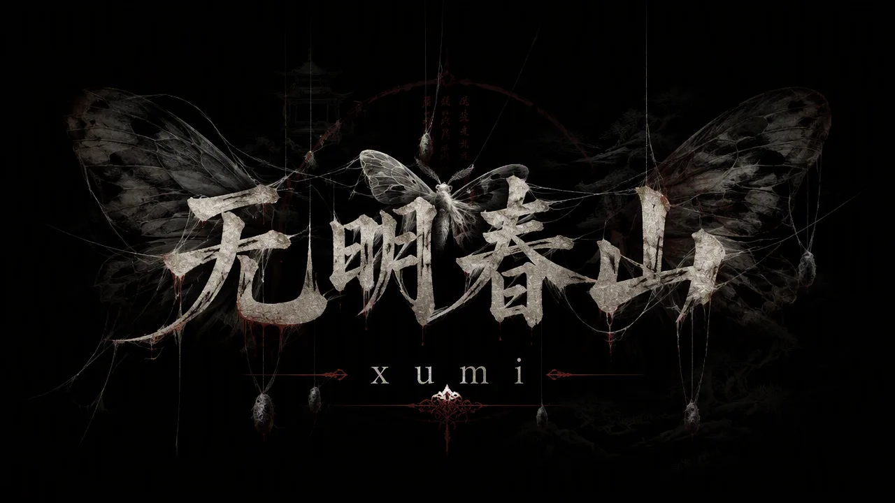
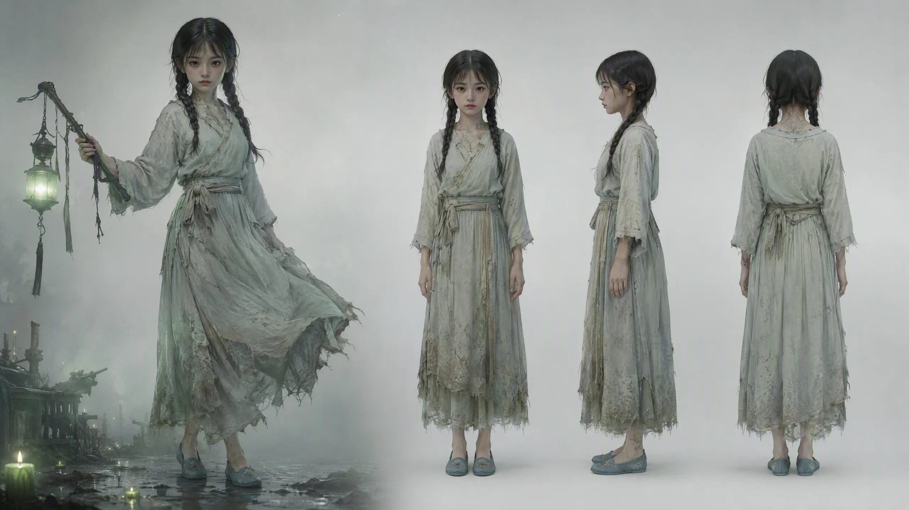
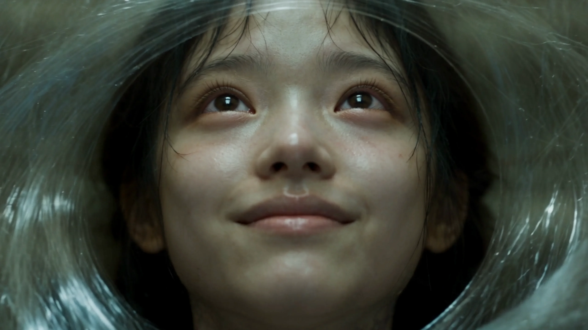
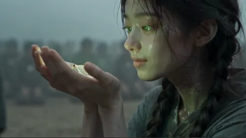
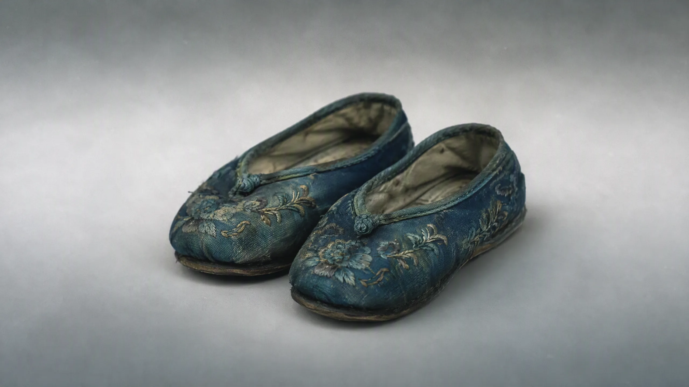
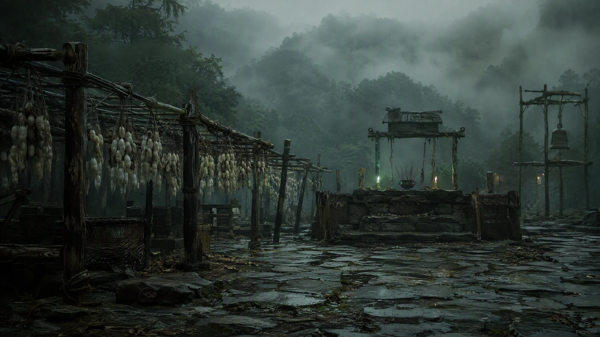
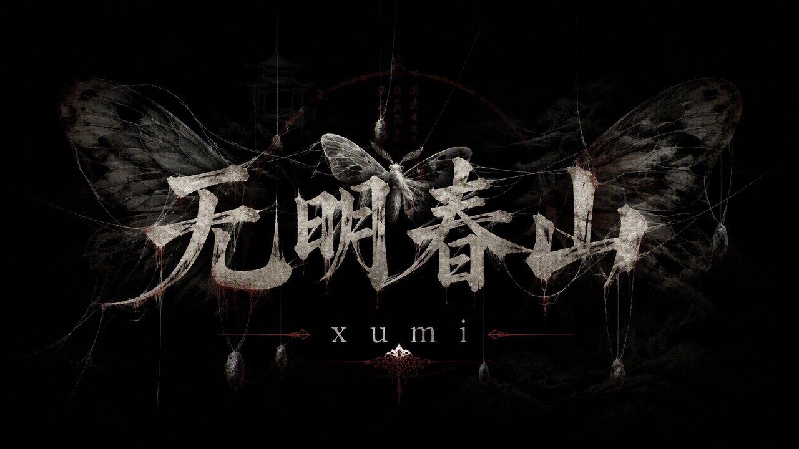

关键约束需要传递到每个环节
剧本、主体、分镜和生成工具之间存在输入转换；角色设定、风格与镜头要求需要进入下游实际收到的输入。
以游戏衍生剧情片《无明春山》为例，分享如何以 Agent影视创作 Skill 为主线完成剧本分析、主体提取与分镜拆解，在视频生成阶段按需用 ACTING SKILL 补充角色行为，再通过反馈与修订完成创作，沉淀发行素材与游戏 PV 的制作经验。

国风写实 / 低饱和青绿
剧本分析 → 主体资产 → 分镜 → 表演提示词 → AI 生成与迭代
按阶段拆解剧本、主体与分镜，保持一致设定，支持对话修改。
在已确定的镜头上补充角色目标、反应与可观察行为。
让下一次发行素材与游戏 PV 制作有据可循。
游戏发行、运营和 PV 制作需要持续产出。AI 图片与视频生成能力为创作提供了新的素材来源，多镜头制作则需要统一角色身份、视觉风格、叙事节奏和交付标准。
剧本、主体、分镜和生成工具之间存在输入转换；角色设定、风格与镜头要求需要进入下游实际收到的输入。
角色、关键物件、色调和声音共同支撑叙事。每个镜头既要表达清楚，也要能够接入全片。
建立任务、输入、模式、模型与纠偏路径之间的选择框架，为后续发行素材与游戏 PV 制作提供参考。
核心工作由 Agent影视创作 Skill 完成：剧本分析、主体提取、分镜拆解与对话编辑。ACTING SKILL 只在视频生成阶段需要细化角色行为时介入，为已确定的镜头补充表演提示词。
按「剧本分析 → 主体提取 → 分镜拆解」建立阶段依赖，将已确定的角色、道具与场景外观作为后续一致性锚点，持续向生成环节提供可执行的输入。
分镜、主体与风格由主线产物确定。镜头需要角色反应、眼神或情绪变化时，用 ACTING SKILL 补充「目标 → 阻碍 → 行动 → 反应」，写进当前视频提示词。
先明确剧情与主体，再组织分镜，让后续生成继承一致设定。
镜头需要角色反应时，才把目标与行为写入视频提示词。
用户指出身份或镜头问题，Agent 在对应阶段调整产物。
保留已确认的人物、场景和道具设定，将这一场拆为镜头组；分别写清每段的叙事任务、画面和行为。
修改时明确位置与范围：保持角色外观，调整当前镜头的景别和机位，更新对应提示词。
在已确定的镜头中，角色试图隐藏犹豫。听见身旁声音时，视线先移向声源，手指短暂停住；她维持原有姿态，以一次轻微呼吸回应，再将目光收回。
行为描写按实际剧本适配，作为视频提示词的补充，再进入生成验收。
剧本、主体、分镜与表演先分别确定，再进入 AI 生成与修订。每一步都留下可复用的输入和清楚的验收目标。
先拆清场景、信息与情绪落点，确定统一的叙事和风格，让每个镜头都有明确的创作目标与验收依据。
色调、材质、光线、空间和排除项，一起进入统一风格描述。
主体资产将文字设定与图像参考绑定，为后续镜头提供统一的角色、场景与道具来源，减少跨镜头身份漂移。

同一资产可服务不同景别、机位和动作。
将心理变化转化为可观察的行为，明确主体、空间、视角、动作和时间，再判断需要控制起点、落点还是关键状态。

首帧控制起点，关键帧控制代表性状态，尾帧控制落点。
Agent影视创作产出的分镜、主体与风格要求构成视频提示词主体；只有镜头需要角色反应时，才用 ACTING SKILL 补充目标、触发与可观察行为。

分镜、主体和风格由核心 Skill 组织，行为提示词按需补充角色反应。
查看 Skill 分工 ↓先区分方向、身份、构图、动作、声音或接缝问题，再调整对应输入和参数。保留修改理由，下一版就有明确的验证目标。
用镜头目标解释选片与修改，积累可复用的纠偏经验。
查看候选与定稿 ↓确认片段中的角色、物件、动作与信息能够贯穿全片，再进行必要的组装和声音整理。
保留输入、提示词、候选与定稿，形成可回看的创作记录。
《无明春山》使用 GPT image 2.0 生成主体与首帧，Seedance 2.5 生成视频。模型选择围绕具体镜头任务，结合参考输入、约束与小样结果。
主体图为跨镜头提供身份锚点，首帧图确定镜头从哪里开始；已有美术资产可通过图生图调整到当前任务。
主体参考用于保持身份并调整机位，帧锚点用于控制画面状态；角色行为由表演提示词明确，再生成并验证。
GPT Image 2.5 Fast
GPT Image 2.5
GPT image 2.0
Midjourney V8.2
Minimax H3
Nano Banana 2.1
Qwen Image 3.0
Seedream 5 Lite
Wan 2.7 Pro
Seedance 2.5
Seedance 2.0
Seedance 2.0 Fast
Kling 4.0
Kling 4.0 Flash
Kling 4.0极速版
Minimax H3
用户决定创作意图与取舍，Agent 给出模式、输入与修订建议。关键镜头先验证，按结果决定沿用、调整参考或修改提示词。
保持身份用主体参考，锁起点用首帧，锁起点与落点用首尾帧；具体输入支持以平台配置为准。
复用主体描述、风格前缀与参考图，将稳定设定显式带入当前镜头的实际输入。
Agent 说明选择理由，用户确认身份、构图和动作的优先级，再决定修改范围。
固定镜头目标与验收标准，检查身份、表演和动作完成度，再安排批量生成。
《无明春山》的素材与修订记录提供具体参照，Agent影视创作负责阶段组织，表演层按需补充角色行为。生成时按问题所在层调整输入，再用新结果验证。
围绕晒场、雾气与空蚕茧的开场表达，查看候选片段与对应的定稿镜头。
国风写实，电影宽幅2.39:1，中式志怪民俗恐怖气质，低饱和青绿主调，潮湿冷雾、幽绿烛火、轻微胶片颗粒与湿冷空气共同塑造诡美而不安的祭祀压迫感。无BGM。 古代山村祭场，夜，浓雾弥漫，风穿过悬垂茧串，远处偶有木铃单响，地面潮湿，烛火幽绿。 镜头1 [3.0s] 时间：夜。[大远景/固定镜头] 高机位俯拍雾锁山村祭场·夜，前景是一排排垂落的白色茧串，中景是冷雾笼罩的祭场与木构屋舍，背景山体隐在夜色里，空蚕茧零散悬垂或被供奉其间，风吹过时茧串轻晃，幽绿烛火在雾里若隐若现。 镜头2 [3.0s] 时间：夜。[全景/缓慢推近] 镜头向雾锁山村祭场·夜中的祭台前推进，成列村民跪伏在湿冷地面，随着推进他们整齐抬头望向同一方向，脸色木然，烛火把下颌与眼窝切出幽暗阴影，整个空间像在等待某个被选中的人出现。 注意：村民是群像，脸部不要长得一样
中式志怪民俗恐怖，低饱和青绿主调与幽绿烛火暖点，轻微胶片颗粒、柔和质感，诡美虔诚氛围。无BGM。 镜头1 [4.0s] 时间：清晨。[大远景/固定镜头] 雾锁山村晒场·黎明雾 被黎明浓雾笼罩，千百茧串如白幕垂落随风轻荡，远处铜铃悬于风中，空旷冷寂。 镜头2 [2.0s] 时间：清晨。[特写/缓慢推近] 镜头推近空蚕茧的细密丝纹与微动，幽绿微光中铜铃极远单响。 镜头1 [4.0s] 时间：清晨。[中景/固定镜头] 雾锁山村晒场·黎明雾 中村民列跪于祭台前，空蚕茧贴于心口，齐望同一方向。 镜头2 [4.0s] 时间：清晨。[近景/缓慢推近] 推近一只捧空蚕茧的手与抬起的脸，木然而期待。 镜头1 [4.0s] 时间：清晨。[中景/固定镜头] 一双手将干蛾翅掌心，她低头看，圆眼映烛火，嘴角扬起。 镜头2 [4.0s] 时间：清晨。[特写/缓慢推近] 推近阿绣边缘，鳞粉微光沾指纹。
剧本与主体先确定，镜头与表演分别控制，生成结果逐版筛选。通过必要的组装和声音整理，形成《无明春山》成片。
沿用 Agent影视创作的阶段拆解与编辑方法，在需要角色表演时复用 ACTING SKILL 的行为写法，并沿用主体资产和纠偏记录，再按新的传播目标组织内容。
沿用主参考、道具和风格规则，统一物料中的角色身份，按当前镜头调整构图。
确定受众、传播钩子、时长和比例；按安全区设计竖版、封面与行动引导。
检查卖点、角色、文字和授权。真实玩法展示使用获批准的实机素材。
沿用风格拆解、主体参考和端点控制方法，接入当前游戏的角色与美术资产，用代表镜头测试策略。
围绕世界观、角色、玩法和版本信息设计镜头顺序，按游戏气质选择节奏与转场。
AI 辅助探索概念氛围，实机与 CG 承担准确的玩法、技能和 UI 展示，后期组织最终内容。
以 Agent影视创作为主，沉淀分析、主体与分镜规范，明确当前阶段、保留项与修改范围，保存可复用的阶段产物。
记录哪些镜头需要 ACTING SKILL 补充、行为提示词与生成结果，明确按需介入的条件。
核对主 Skill 规则读取、结构化输出和生成输入，按代表镜头验证资产一致性，再继续复用。
角色身份 / 多视角

关键道具 / 连续性

场景空间 / 氛围
镜头锚点 / 状态

片尾卡 / 交付图层
《无明春山》的剧本、主体设定、分镜、候选视频和音轨按制作阶段归档，可结合前面的选择原则查看具体素材与提示词。
剧本与故事设定
剧本分析 / 主体设定 / 分镜表
人物 / 道具 / 场景 / 视频 / 音频
候选片段与废稿音轨
最终输出文件
将资产、选择理由和修订结果一起沉淀，为后续制作提供可以沿用和调整的判断方法。
复用资产，复盘决策，
按任务选择模型，以交付标准验收。
剧本、主体设定、分镜表、候选与定稿视频及成片。
剧本分析、主体提取、分镜拆解，以及对应阶段的对话编辑规则。视频生成阶段可按需用 ACTING SKILL 辅助补充角色行为，下载辅助方法文件。
采用当前平台模型清单；生成时结合实际输入、参数与小样选择。